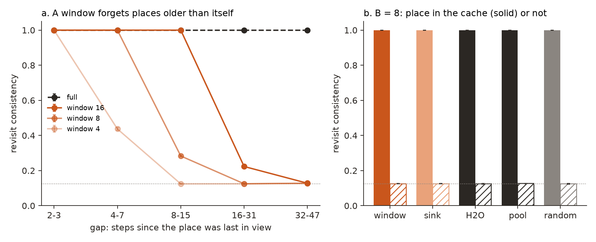
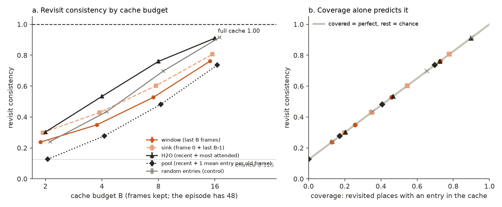
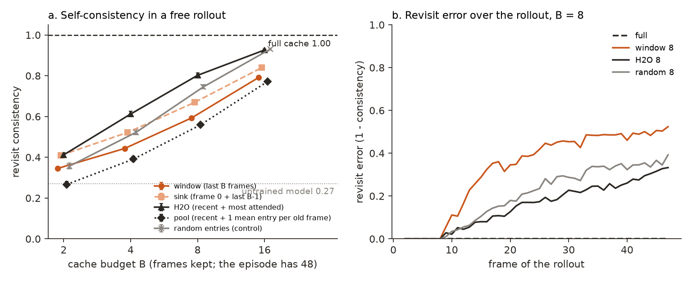
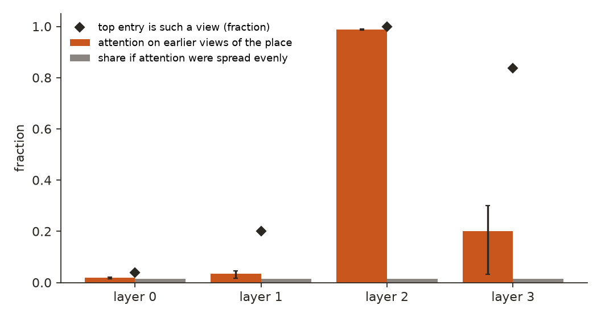
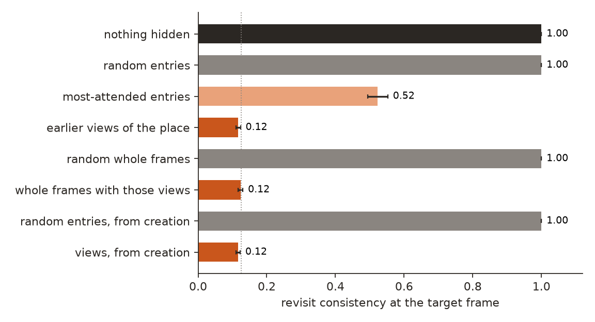

← Research·Experiments·
A toy video world model redraws a place exactly when one cached view of it survives eviction
We trained a small causal transformer to draw a moving camera’s view of a random map from a KV cache of earlier frames, then trimmed that cache six ways. Every return to a place whose earlier view was still cached came out perfect, and every return without one came out at chance. A cache policy is only as good as the share of places it keeps a view of.
![On a dark ground, a patchwork of grey tiles shows the part of a 32 by 32 map one episode's camera saw, with its path as a thin line. An orange square marks the view at frame 38, and thinner orange squares mark the earlier views the model attends to. On the right, a bar chart of attention over the 37 earlier frames: two tall orange bars sit exactly above two blue ticks at frames 19 and 20, the only frames that saw the revisited places; the other bars are near zero except a small rise over the last few frames.](figures/hero.jpg)
Summary: the short answer and the key results
In short
What does a video world model keep in its KV cache, and what breaks when you evict it?
In this toy, the cache is the model’s whole memory of places, and nothing else holds it. A revisit (the camera leaves a place and comes back) is drawn correctly 1.000 of the time when at least one cached entry still shows that place, and at chance (0.124 to 0.127; chance is 0.125) when none does. This holds for every policy, budget and seed. So a policy’s score is fixed by its coverage, the share of revisited places it kept a view of. At a budget of 8 of 48 frames, the sliding window that video models use keeps 46% and scores 0.53. Evicting by accumulated attention (as H2O does) keeps 73% and scores 0.76. Even random eviction keeps 65% and scores 0.70. Inside the model, one layer puts 0.99 of its attention at a revisit on earlier views of that place. Hiding exactly those entries, about 30 of up to 752, drops revisit consistency to chance (0.12). Hiding 30 random entries changes nothing (1.00).
Key results
| What we tested | Result (3 seeds, 1,536 held-out episodes, 95% intervals) | Compared with |
|---|---|---|
| Known answer: does the full cache give perfect revisits? | Yes. 1.000 [1.000, 1.000] on 576,684 revisit tiles | Chance 0.125; new places score 0.125 too (they cannot be known) |
| Known answer: does a window shorter than the gap fail? | Yes, to chance. Window 8 at gaps 16 to 31: 0.125; at gaps 2 to 7: 1.000 | Full cache 1.000 at every gap |
| Does a policy’s score depend on anything but coverage? | No. In cache: 1.000 for all 20 policy-budget pairs. Not in cache: 0.124 to 0.127 | So consistency = 0.125 + 0.875 × coverage, to the third decimal (Figure 1b) |
| Which policy keeps the most places at B = 8? | H2O-style eviction, 0.760 [0.749, 0.769]; random 0.697; sink 0.602; window 0.527; pool 0.482 | H2O − window +0.23 [0.22, 0.24]; H2O − random +0.06 [0.05, 0.07] |
| Does the model attend to the view that saw the place? | Yes, in layer 2. 0.988 of attention on earlier views of the place; the top entry is such a view for 100% of revisit tokens | 0.015 if attention were spread evenly |
| Causal: hide exactly those entries | Drops to chance, 0.117 [0.111, 0.123] | The same number of random entries: 1.000 |
| Does the model “cheat” by copying old views forward into later frames? | No. Hiding the views from every later frame too gives the same 0.116; difference 0.001 [−0.001, 0.003] | Hiding them from the current frame only: 0.117 |
01Introduction
Walk past a red door, turn down two streets and come back: a good world model should draw the same red door. A causal video model draws each new frame by attending to its KV cache, the keys and values it stored for earlier frames. To run for minutes on a fixed memory budget it has to throw most of that cache away. Which entries it throws away decides what it can still draw when you come back. This note measures that in a toy where the right answer is known exactly. It follows Episode 1 (a tiny world model of bouncing balls, opened up) and Episode 2 (how long rollouts of learned simulators drift).
What is known. Causal video diffusion models such as CausVid and Self Forcing generate frame chunks one after another from a KV cache. They bound that cache with a rolling window, which follow-up work extends with an “attention sink” borrowed from StreamingLLM. Models that need to remember places retrieve past frames by camera pose instead (Table 1). For language models, score-based eviction such as H2O and SnapKV keeps the entries that received the most attention.
| Work | What stays in context | How it is bounded |
|---|---|---|
| Self Forcing (and CausVid) | KV of the most recent frames | Rolling window, oldest evicted. Self Forcing’s code defaults to 21 latent frames and no sink |
| Matrix-Game 2.0 | Recent latents and action embeddings | Rolling window. A 6-latent cache beat a 9-latent one in its ablation; first frame not kept |
| MAGI-1 | Cached features of denoised chunks | A “KV range” (for example the last 8 seconds) |
| Rolling Forcing, LongLive, Infinity-RoPE | First frames as a sink plus a short recent window | Sink + window, with position indices re-anchored |
| Genie | The last 16 frames | Fixed context; later Genie versions’ memory is unpublished |
| WorldMem, Context-as-Memory, VMem | A bank of past frames, keyed by camera pose, field of view or surfels | Retrieve the few past frames that overlap the target view |
| Seoul World Model (paper) | The last 5 generated frames, re-encoded, plus retrieved street-view images warped to the camera and a retrieved look-ahead image | Chunk by chunk, with no KV cache carried between chunks. Memory comes from retrieval, not from a cache |
What is missing. Video papers tune the window length on overall quality. None we found asks which cached entries a world model actually reads when it returns to a place, or checks that causally, or compares window and sink against score-based or random eviction at a matched budget.
What does a video world model keep in its KV cache, and what breaks when you evict it?
What this note does. It trains a small model where every cache entry has a known map location, then measures revisit consistency under six policies. Its contributions:
- A measurement: revisit consistency is set entirely by coverage, with no partial credit and no memory outside the cache.
- A ranking at matched budgets: attention-score eviction keeps the most places; the sliding window keeps fewer than random eviction does.
- A mechanism, tested causally: one layer looks up the earlier view of the place, and hiding exactly those entries is enough to break the revisit.
- A small harness (Section 7) for plugging in another cache policy or model.
02Setup
The world. A 32 × 32 map of tiles, each one of 8 colours at random, with a new map in every episode, so nothing off-screen can be guessed. A camera sees 8 × 8 tiles and moves one patch (2 × 2 tiles) up, down, left or right per step. A frame is 16 patch tokens. An episode is 48 frames. The camera walks between waypoints, half of them places it has already been, so it often leaves a place and returns.
The model. A 4-layer causal transformer (width 128, 4 heads, 0.81M parameters) generates each frame in one pass, the way causal video diffusion models generate a chunk. The frame’s 16 query tokens carry its camera position, the action and the frame index. They attend to the cached keys and values of all earlier frames and to each other. The generated frame is then encoded as 16 clean tokens and appended to the cache. Training uses the same attention pattern on whole episodes with teacher forcing (6,000 steps, about 13 minutes on an A10G). We give the model its camera position, as pose-conditioned memory models do, so the test is about the cache rather than about tracking position.
Terms, used the same way throughout:
- Gap: steps since a place was last in view. Gap 1 is a shift (the place was in the previous frame). Gap 2 or more is a revisit. A place never seen is new; nothing can predict it, and chance is 1/8 per tile.
- Revisit consistency: the fraction of revisit tiles drawn the same as when the place was last shown. In observed mode the cache holds the true frames, so this is one-step accuracy. In dream mode only frame 0 is true and the model’s own frames go back into the cache, so this is self-consistency over a free rollout.
- In cache: when the frame is drawn, some kept entry is an earlier view of that place. Coverage is the share of revisit tiles that are in cache.
Cache policies. The budget B is in frames (16 entries each), and every policy keeps the newest frame:
- window: the last B frames.
- sink: frame 0 plus the last B−1.
- H2O-style: the last B/2 frames, then the older entries with the most accumulated attention, entry by entry.
- pool: the last B−1 frames, plus one mean key and value for each older frame.
- random: random older entries, the control.
All are compared at B = 2, 4, 8 and 16; the full cache holds 47 frames when the last one is drawn.
What counts as success (pre-registered): the full cache gives near-perfect revisits (≥ 0.95) and a window shorter than the gap falls to near chance, or the model never learned to use its memory; hiding the entries the model attends to hurts more than hiding as many random entries; and revisits with every view evicted sit at chance, or memory lives outside the cache.
03How the study was run
- Build and check: the step-by-step rollout with a KV cache matches the whole-sequence pass to 1e-6. One smoke training run (seed 9, 3,000 steps) was used only to check that training works.
- Pre-register the setup, 11 predictions with probabilities, the controls and the results that mean “no” (PREREGISTRATION.md), committed before any model was evaluated.
- Train 3 models (seeds 1 to 3) and save an untrained one as a floor for dream mode.
- Evaluate each on the same 512 fresh episodes (a generator seed training never used): 21 policy-budget settings × 2 modes, attention attribution on 128 episodes, probes on 256, causal eviction on 256.
- Analyse: 95% bootstrap intervals resampling seeds and then episodes (4,000 draws); paired differences on the same draws.
| Fixed before any evaluation | Changed after reading results |
|---|---|
| World, model, training steps, seeds, policies, budgets, metrics, causal conditions, predictions | Nothing in the runs. After the results: Figure 1b (coverage against consistency) and the cover episode were added; both read the pre-registered outputs |
Conditions: greedy decoding (argmax per tile); one NVIDIA A10G per run on Modal; 56 GPU-minutes in all, about $1.
04Results
4.1 Known-answer checks pass: the full cache is perfect, and a window forgets exactly what is older than itself
With the full cache, revisit consistency is 1.000 [1.000, 1.000] on all 576,684 revisit tiles, at every gap up to 47 steps, in both modes. Shift tiles are 1.000 and new tiles 0.125, which is chance. The model has learned to redraw what it has seen and nothing more. A window of B frames keeps revisits perfect up to a gap of B and then drops to chance (Figure 2a). Window 8 scores 1.000 at gaps 4 to 7, 0.283 at gaps 8 to 15 (only gap 8 is still inside the window), and 0.125 at gaps 16 to 31.

4.2 A policy’s score is its coverage; H2O-style eviction keeps the most places, the sliding window fewer than random
Across all 20 policy-budget pairs, revisits whose place was in cache scored 1.000 and those whose place was not scored 0.124 to 0.127 (Figure 2b). No policy gives partial credit, so revisit consistency is 0.125 + 0.875 × coverage to the third decimal (Figure 1b). Comparing policies is the same as asking which one keeps views of the places the camera will return to.

At a budget of 8 frames:
- H2O-style eviction keeps 73% of revisited places and scores 0.760 [0.749, 0.769]. That is 0.23 [0.22, 0.24] above the window and 0.06 [0.05, 0.07] above random.
- Random eviction scores 0.697. It beats the window at B = 4, 8 and 16, by 0.09 to 0.17, because scattered old entries cover more places than a block of recent frames.
- The sink adds 0.04 to 0.08 over the window at every budget. Frame 0 shows the area where the episode starts, and the camera often returns there. The gain is ordinary coverage: the sink’s in-cache revisits score 1.000 like everyone else’s.
- Pooling old frames into one mean entry each is worse than the window at every budget (−0.11 at B = 2, −0.05 at B = 8). The mean entries recover nothing, and pooling gives up one whole frame to make room.
At B = 16, random (0.915) and H2O-style eviction (0.910) are level.
4.3 In a free rollout the same holds, and forgetting builds up over time
When the model’s own frames go back into the cache, the full cache still gives 1.000 self-consistency. Covered revisits are still 1.000. Uncovered ones score about 0.25, near an untrained model’s 0.27, because repeated guesses sometimes agree with each other. The ranking is unchanged (Figure 3a). Errors build up as more places fall out of the cache. With B = 8, revisit error at the last frame is 0.52 for the window, 0.39 for random and 0.33 for H2O-style eviction (Figure 3b).

4.4 One layer looks up the earlier view of the place
At revisit tokens with the full cache, layer 2 puts 0.988 of its attention on earlier views of that exact place (seed range 0.985 to 0.990). An even spread would give 0.015, 68 times less (Figure 4). The most attended entry is such a view for 100% of revisit tokens. Only 0.27 goes to the most recent view: the layer spreads its attention across all earlier views of the place, not the latest one. Layers 0 and 1 attend mostly to recent frames. Layer 3 reads the place’s views in some seeds and not others (0.03 to 0.30).

The cached keys carry the address that this lookup needs. A linear probe reads a token’s map location from layer 2 keys at 1.000 for both x and y (majority class 0.11). Layer 0 keys already give 0.96 and 0.98, since location is nearly a sum of input embeddings; the probe shows the address is there, the causal test shows it is used.
4.5 Hiding exactly those entries breaks the revisit, and nothing else holds the memory
In each of 256 episodes per seed we took the frame with the most revisits at gap 4 or more. Then we hid the cache entries that were earlier views of the revisited places, about 30 entries out of up to 752, spread over 11 frames on average (Figure 5).
- Hidden views drop revisit consistency from 1.000 to 0.117 [0.111, 0.123], which is chance.
- The same number of random entries leave it at 1.000. The extra drop from hiding the views is 0.883 [0.877, 0.889].
- Whole frames behave the same way: the frames that hold the views give 0.123, and as many random frames give 1.000.
- Shift tiles in the same frame stay at 1.000, so the damage is specific to the hidden places.

The boring explanation, tested. Hiding the views only from the frame being drawn would miss memory copied forward. Later frames attend to their cache too, and their entries could carry an old view on (“cheating” through recent frames). Hiding the views from every later frame as well gives the same result, 0.116 against 0.117; the difference is 0.001 [−0.001, 0.003]. Nothing is carried forward. The views themselves are the memory, which is also why every uncovered revisit in Section 4.2 sits at chance.
Hiding by attention. Hiding the same number of the most-attended entries, summed over all layers, gives only 0.522 [0.495, 0.552]. Those entries include 89% of the views. The 11% that escape are enough to keep about half of the revisits, because one surviving view of a place is all the model needs.
4.6 Memory falls with the budget; at this size, time per frame does not
The full cache ends with 752 entries per layer (3.1 MB in fp32 here); budget 8 holds 128 (0.5 MB). Time per frame was 4.3 to 5.3 ms for every policy: a 0.8M-parameter model is bound by per-step overhead, so this toy says nothing about speed at video-model scale.
4.7 Predictions: 8 of 11 held
| Pre-registered prediction (probability) | Result |
|---|---|
| 1. Full cache ≥ 0.95 (0.85) | Held: 1.000 |
| 2. Out-of-window revisits ≤ 0.20 (0.65) | Held: 0.124 to 0.127 |
| 3. Sink within 0.02 of window (0.75) | Failed: +0.04 to +0.08, through coverage of the start area |
| 4. H2O-style beats window at B = 4 and 8, below full (0.6) | Held: +0.18 and +0.23 |
| 5. Pool within 0.05 of window (0.65) | Failed: worse by 0.11 at B = 2 and 0.07 at B = 4 |
| 6. Random beats window at B = 4 (0.55) | Held: +0.09 [0.08, 0.09] |
| 7. A layer puts ≥ 5× the even share on views; top entry a view ≥ 50% (0.8) | Held: 68×, 100% |
| 8. Location decodable from some layer’s keys ≥ 0.9 (0.7) | Held: 1.000 |
| 9a. Hiding views drops ≥ 0.3 more than random (0.8) | Held: 0.88 more |
| 9b. Hiding most-attended drops at least as much (0.5) | Failed: 0.52 against 0.12 |
| 10. No relay: from creation ≤ 0.20, current frame only ≤ 0.30 (0.6) | Held: 0.116 and 0.117 |
| 11. Dream mode, full cache ≥ 0.9 (0.7) | Held: 1.000 |
05Implications
If a video world model is meant to stay consistent when you come back to a place, its consistency at a given memory budget is decided by which views its cache keeps. A recent-frames window is close to the worst choice for that, and attention scores are a useful but imperfect guide. It also makes failures auditable: a wrong revisit traces to one evicted entry, not to the weights.
Recommendation: report revisit consistency split by whether the place was still in the cache. If the in-cache score is near perfect, compare eviction policies by coverage alone.
06What this does and does not show
- A toy, built to make memory exact. Random tiles, a given camera position, 0.81M parameters. Real video models compress and hallucinate, so their in-cache revisits will not be perfect; the recommended split measures by how much.
- Training-free eviction only. Models trained with a rolling cache, as Self Forcing is, may learn to carry memory forward; this one never needed to.
- One walk pattern. Half of the waypoints return to earlier positions; the sink’s gain and H2O’s lead depend on that.
- No real video model. The open causal video models we found (Self Forcing, CausVid) take text or an image, not camera actions, so a revisit is not defined for them; the action-conditioned ones need a larger setup than this toy, so we skipped that test.
07Reuse it
The harness is about 450 lines of PyTorch (wm_core.py). A policy is a branch of apply_policy that edits the cache’s keep mask after each frame is appended. Each entry carries its frame index, its map location (used only for scoring) and the attention it has received so far. To try your own:
from wm_core import Policy, rollout
from evaluate import episodes, load, score_rollout
model, _ = load("results/ckpt_s1.pt", "cpu")
tiles, pose, act, loc, gap = episodes(64, 48, 77, "cpu")
r = rollout(model, tiles, pose, act, loc, Policy("window", budget=8), mode="observed")
s = score_rollout(r, loc, gap) # per-episode [hits, tiles]: revisit, revisit_in, revisit_out, gap bins
To test a real model the same way, you need three things:
- a camera path that comes back to places;
- the map location each cache entry shows (from the camera pose and the patch);
- a per-patch consistency score at the revisits.
Then split the score by whether a view of the place was still in the cache. The two halves tell you how much of the model’s inconsistency is eviction and how much is the model itself.
08Reproduce it
reproduce.sh runs every step (training and evaluation on Modal, about 16 A10G-minutes per seed; analysis, figures and cover locally); --dry-run prints the commands and --scores redraws from results/, which includes the trained weights.
09What’s next
- Train with a rolling cache and check whether the model learns to carry places forward.
- A retrieval policy that keeps entries by camera pose, like WorldMem’s, at the same budget. Coverage predicts it matches the full cache whenever it finds the view.
- Run the split on an action-conditioned open model with a KV cache, such as Matrix-Game 2.0, with a scripted path that returns to its start.
10Questions and answers
What does a video world model store in its KV cache?
In this toy, the cache is the whole memory of places. One attention layer looks up the earlier view of the place being drawn, and the cached keys encode each entry’s map location. When every view of a place is evicted, the model draws it at chance; no copy of it exists elsewhere.
Is a sliding-window KV cache good for world-model consistency?
Not for revisits. At 8 of 48 frames, a window kept views of 46% of revisited places and scored 0.53, below random eviction (0.70) and attention-score eviction (0.76). It is perfect only for places seen within the window.
Does Seoul World Model use a KV cache?
Not across chunks, according to its released code and paper. It generates chunk by chunk, conditions each chunk on the last 5 generated frames, and retrieves nearby street-view images warped to the camera, plus a retrieved look-ahead image. Its memory of the city comes from retrieval rather than a long cache.
AAppendix: data
results/eval_s{1,2,3}.json: one seed’s evaluation, with per-episode hits and tiles for every policy, budget, mode and gap bin, plus attention, probes, causal conditions and timing. Fields in README.md.results/summary.json: every number in this note with its 95% interval (rate,lo,hi,tiles), and the paired differences.results/ckpt_s{1,2,3}.pt,results/ckpt_untrained_s1.pt: weights and training logs;results/eval_untrained_s1.json: the dream-mode floor.results/gpu_ledger.jsonl: every Modal job, its minutes and cost;results/figures_printout.txt: every number the figures plot.
Techniques
| Design | Synthetic world with exact ground truth; same trained model under every cache policy; pre-registered predictions |
|---|---|
| Model | Causal transformer generating a frame per pass from a KV cache of clean frames (teacher-forced training) |
| Interpretability | Attention attribution to cache entries; linear probes on cached keys and values; causal eviction (masking) of chosen entries |
| Controls | Random eviction at matched size (policies, entries, whole frames); even-spread attention share; majority-class probe; untrained model |
| Statistics | Bootstrap over seeds then episodes (4,000 draws); paired differences on the same draws |
Tech stack
| Code | PyTorch 2.4, scikit-learn 1.5, matplotlib |
|---|---|
| Compute | Modal, NVIDIA A10G; 56 GPU-minutes, about $1 |
Revision history
- Nov 27, 2026: First published.
How to cite
@misc{lie2026wmkvcache,
author = {Albert Lie},
title = {A toy video world model redraws a place exactly when one cached view of it survives eviction},
year = {2026},
month = nov,
url = {https://albertlieyingadrian.github.io/steerlab/experiments/wm-kv-cache/report/}
}